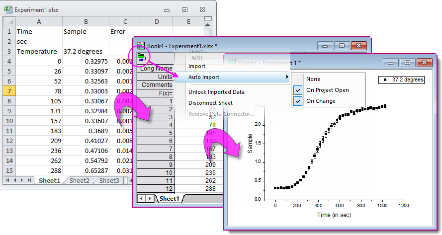
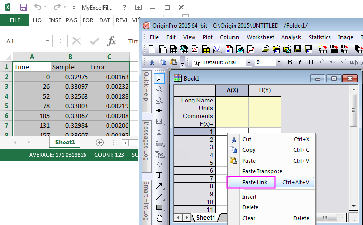

Mit Microsoft Excel arbeiten
Work-With-Excel
 |
Viele Jahre lang hat Origin eine OLE-Instanz von MS Excel innerhalb des Origin-Arbeitsbereichs unterstützt, auch wenn es den Zugriff auf Origins Grafik- und Analysehilfsmittel stark eingeschränkt hat. Über die Zeit haben Anwender von einer Zunahme der Probleme berichtet. Infolgedessen entschied OriginLab, die Elemente der Bedienoberfläche zum Starten der OLE-Instanzen von Excel zu entfernen.
Wir empfehlen Ihnen die Verwendung des Excel-Datenkonnektors zum Importieren von Excel-Daten. Der Excel-Konnektor ist schnell und Sie haben vollen Zugriff auf Origins Grafik- und Analysehilfsmittel. Sollte das Verwenden des Excel-Konnektors keine Option sein, lesen Sie bitte dieses Thema.
|
Es gibt zwei Möglichkeite mit Microsoft-Excel-Daten in Origin zu arbeiten:
- eine Excel-Datei in eine Origin-Arbeitsmappe importieren,
- Excel-Daten in Zwischenablage kopieren und in eine Origin-Arbeitsmappe einfügen bzw. eine Verknüpfung einfügen.
|
Excel importieren |
Excel-Daten kopieren |
| Durchführung |
- Wählen Sie im Menü Daten: Mit Datei verbinden: Excel.
- Klicken Sie auf die Schaltfläche Excel importieren
 in der Symbolleiste Standard. in der Symbolleiste Standard.
- Ziehen Sie eine Excel-Datei per Drag&Drop in das Origin-Arbeitsblatt.
|
- Kopieren Sie die Daten aus Excel und klicken Sie mit der rechten Maustaste, um Einfügen (oder Verknüpfung einfügen) in Origin auszuwählen.
|
| Wie funktioniert es? |
- Excel-Daten werden in die Arbeitsmappe von Origin gelesen.
- Vor dem Importieren legt ein Anwender ein zu importierendes Anfangsblatt, Headerzeilen, Spaltenbeschriftungen, partiellen Import (optional) fest.
|
- Excel-Daten werden in die Arbeitsmappe von Origin eingefügt.
- Wenn Sie Verknüpfung einfügen, wählen, erstellen Sie eine DDE-Verknüpfung zwischen den Excel-Daten und der Origin-Arbeitsmappe. Jede Änderungen diesen Excel-Daten aktualisiert dynamisch die Origin-Arbeitsmappe.
|
| Umgang mit Metadaten |
- Metadaten, wie mehrzeilige Header, können bewahrt werden, so dass Daten einfach neu zu importieren sind, wenn sich die externe Excel-Datei ändert.
|
- Metadaten wie Header sollten manuell hinzugefügt werden.
|
| Grafische Darstellung |
- Voller Zugriff auf die Funktionen der grafischen Darstellung in Origin
|
- Voller Zugriff auf die Funktionen der grafischen Darstellung in Origin
|
| Datenanalyse |
- Voller Zugriff auf die Funktionen der Analyse in Origin
- Formeln in importierten Excel-Arbeitsmappen fehlen und werden stattdessen als die entsprechenden Werte gezeigt.
- Änderungen in der ursprünglichen Excel-Mappe können in importierten Arbeitsmappen, verbundenen Analysen und Zeichnungen über Neu importieren aktualisiert werden.
|
- Voller Zugriff auf die Funktionen der Analyse in Origin
- Änderungen in den Excel-Quelldaten aktualisieren dynamisch das Origin-Projekt.
|
Excel-Daten in Origin aktualisieren
Wenn Sie eine Excel-Datei regelmäßig aktualisieren, gibt es ein paar Möglichkeiten, Updates an Origin weiterzugeben:
- Wenn eine Excel-Datei in eine Origin-Arbeitsmappe über den Excel-Konnektor importiert wird, werden Updates dieser Datei (Updates müssen gespeichert werden) an die Origin-Arbeitsmappe weitergegeben.
- Wenn Sie Excel-Daten in die Zwischenablage kopieren, wählen Sie zum Einfügen in Origin Verknüpfung einfügen.
Neuimport bei Änderungen der Daten
Das Importieren von Daten mit einem Datenkonnektor erstellt eine Live-Verbindung zwischen der Origin-Arbeitsmappe und den Quelldaten. Wenn die Qzelldaten aktualisiert werden, ist es daher einfach die Origin-Arbeitsmappe und die abhängigen Zeichnungen zu aktualisieren.
- Origin-Arbeitsmappen können manuell aktualisiert werden, indem auf das Symbol Konnektor geklickt und die Option Import gewählt wird.
- Origin-Arbeitsmappen können automatisch aktualisiert werden, indem auf das Symbol Konnektor geklickt und Automatisch importieren gewählt wird. Wählen Sie dann noch Beim Öffnen des Projekts und/oder Bei Änderung.

Excel-Daten außerhalb kopieren und in Origin einfügen/Verknüpfung einfügen
Manchmal ist es vielleicht wünschenswert, Excel-Daten einfach aus einer in Excel geöffneten Arbeitsmappe zu kopieren und diese in Origin einzufügen bzw. eine Verknüpfung einzufügen, um Zugriff auf Origins leistungsstarke Funktionen für grafische Darstellung und Analyse zu erhalten. Wenn Sie sich dafür entscheiden, die Excel-Daten als Link einzufügen, wird jede Änderung in dieser Excel-Arbeitsmappe dynamisch im Origin-Projekt aktualisiert.
- 
 |
- Beim Kopieren von Daten von Excel in Origin wird die volle Genauigkeit statt der in Excel angezeigten Anzahl von Stellen kopiert. Für kompliziertere Daten, die aus Excel kopiert wurden, enthält Origin die Möglichkeit, seinen Importassistenten für Daten aus der Zwischenablage zu verwenden.
- Zum Kopieren und Einfügen von Datums- oder Zeitdaten aus Excel lesen Sie die folgenden FAQs:
- Um die Excel-DDE-Links zu entfernen, lesen Sie bitte diese FAQ.
|
|
Themen, die in diesem Abschnitt behandelt werden:
|